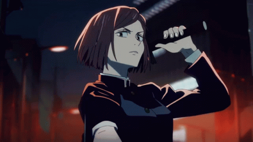
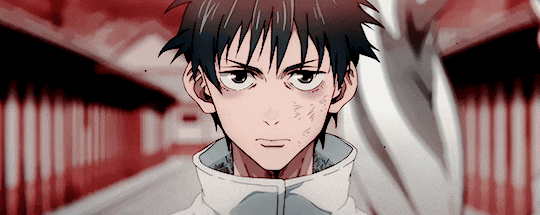
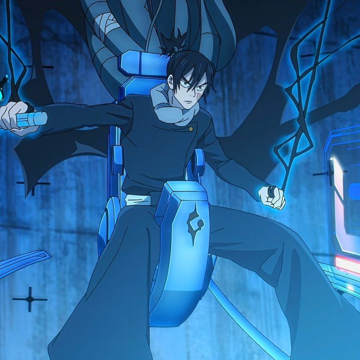
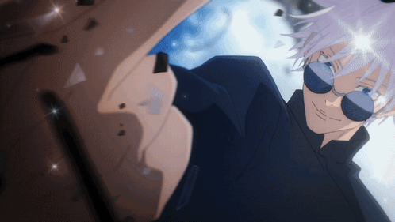
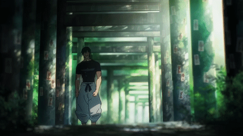

Jujutsu Kaisen es una historia de acción sobrenatural que se desarrolla en un mundo donde
las emociones negativas de los humanos como el miedo, la ira o el odio dan origen a entidades
conocidas como Maldiciones. Estas criaturas invisibles para la mayoría de las personas representan
un peligro constante para la humanidad.
Para combatirlas existen los Hechiceros Jujutsu, individuos entrenados para controlar la energía
maldita y enfrentarse a estas amenazas. A través de técnicas especiales, herramientas rituales y
expansiones de dominio, luchan en secreto para mantener el equilibrio entre el mundo humano y el
mundo de las maldiciones.
La historia sigue a Yuji Itadori, un estudiante que se ve arrastrado a este conflicto tras
convertirse en el recipiente de una poderosa maldición. Desde ese momento, su vida cambia por
completo al ingresar a la Escuela Técnica de Hechicería de Tokio, donde aprenderá que ser
hechicero no es un honor, sino una carga llena de sacrificios.
Opening 3 Jujutsu Kaisen
El tercer opening del anime corresponde al arco Incidente de Shibuya, una de las partes más intensas y oscuras de la historia.
La canción se titula “SPECIALZ” y es interpretada por la banda japonesa King Gnu. Este opening se caracteriza por su estilo alternativo y caótico,
que refleja el conflicto, la desesperación y la ruptura del equilibrio que ocurre durante este arco.
A diferencia de openings anteriores más heroicos, “SPECIALZ” transmite una atmósfera inquietante y emocional,
mostrando la transformación de los personajes, el crecimiento de la tragedia y la magnitud de la batalla en Shibuya.
La composición mezcla rock experimental con una energía desordenada que simboliza el colapso del mundo de los hechiceros
frente a las maldiciones, alineándose perfectamente con el tono dramático de la historia.
Estudiantes y personajes principales de Jujutsu Kaisen
Yuji Itadori
Yuji era un estudiante normal con habilidades físicas extraordinarias que vivía con su abuelo.
Antes de morir, su abuelo le dejó un consejo clave: ayudar siempre a otros y no morir solo.
Su vida cambia cuando entra en contacto con un objeto maldito: el dedo de Sukuna. Para salvar
a sus amigos, Yuji lo ingiere y se convierte en el recipiente de una de las maldiciones más
peligrosas de la historia.
Aunque debía ser ejecutado, se le permite vivir hasta reunir todos los dedos y eliminar a
Sukuna definitivamente.
Su motivación principal es que las personas tengan una “muerte adecuada” y proteger vidas
sin importar quiénes sean, incluso si eso implica su propia ejecución futura.
Megumi Fushiguro
Megumi es quien introduce a Yuji al mundo de la hechicería mientras busca el dedo de Sukuna.
Proviene de un clan importante, pero su pasado está marcado por conflictos familiares y decisiones
difíciles sobre a quién vale la pena salvar.
Su forma de pensar no es salvar a todos indiscriminadamente, sino proteger a quienes considera
“buenas personas”, lo que genera contraste con Yuji.
Su objetivo es hacerse más fuerte para proteger a su hermana y a quienes considera valiosos.
Nobara Kugisaki

Nobara proviene de una zona rural y decidió convertirse en hechicera para escapar de una vida
limitada y demostrar su independencia.
Su personalidad fuerte refleja su deseo de mantener su identidad y orgullo aun dentro de un mundo
peligroso.
Como hechicera, utiliza técnicas con clavos que conectan su energía maldita con sus objetivos.
Maki Zenin
Maki nació dentro del poderoso Clan Zenin, pero fue rechazada por no poseer suficiente energía
maldita.
Esto creó en ella una motivación enorme: demostrar que puede ser una hechicera de alto nivel solo
con entrenamiento físico y armas malditas.
Su historia es una lucha constante contra el desprecio de su propio clan.
Toge Inumaki
Toge Inumaki es un estudiante de la Escuela de Hechicería de Tokio y heredero de la técnica del Habla Maldita.
Esta técnica convierte sus palabras en órdenes obligatorias, capaces de dañar gravemente a quien las escuche. Debido a su enorme peligrosidad, Toge limita su vocabulario a ingredientes de comida, evitando herir accidentalmente a otros.
Su personalidad tranquila y reservada no es timidez, sino una forma consciente de proteger a quienes lo rodean. A pesar de hablar poco, demuestra gran lealtad hacia sus compañeros y una fuerte ética como hechicero.
Inumaki representa el sacrificio silencioso: posee un poder devastador, pero vive restringiéndose a sí mismo para no causar daño innecesario.
Panda
Panda no es un animal real, sino un cadáver maldito creado artificialmente por el director Yaga. A diferencia de otras creaciones similares, Panda posee conciencia propia, emociones y voluntad, lo que lo hace único.
Cuenta con múltiples núcleos de energía, cada uno con una personalidad y estilo de combate diferente, permitiéndole adaptarse a distintas situaciones. Esta característica lo convierte en un combatiente impredecible.
Más allá de su fuerza, Panda enfrenta un conflicto interno constante: la búsqueda de identidad. Su historia gira en torno a la pregunta de si es una simple creación o un ser vivo con derecho a decidir su propio destino.
Panda representa uno de los temas centrales de Jujutsu Kaisen: qué significa realmente estar vivo.
Yuta Okkotsu

Yuta Okkotsu es un personaje definido por la transición del miedo paralizante a la determinación absoluta, cuyo núcleo emocional reside en el trauma de haber maldecido accidentalmente a su primer amor, Rika Orimoto,
cargando durante años con una culpa devoradora y un aislamiento autoimpuesto. Su mayor fortaleza no es solo su inmensa reserva de energía maldita o su técnica de mimetismo, sino su capacidad de transformar ese vínculo
trágico en una fuente de poder basada en el "amor puro", aceptando sus sombras para proteger a quienes lo rodean. Sus ganas de seguir luchando nacen de un sentido del deber profundamente altruista; tras encontrar un
hogar en el Colegio Técnico de Magia, Yuta deja de pelear por castigo personal para convertirse en el protector de sus compañeros, asumiendo la carga de ser "el próximo monstruo" si es necesario con tal de asegurar un
futuro donde nadie más tenga que sufrir la soledad que él conoció.
Aoi Todo
Aoi Todo es un estudiante de la Escuela de Hechicería de Kyoto, conocido por su fuerza física excepcional y su personalidad extrovertida. A pesar de su apariencia intimidante, Todo es un personaje profundamente leal y con un fuerte sentido de la justicia.
Su técnica maldita, "Boogie Woogie", le permite intercambiar lugares con cualquier persona o cosa que toque, lo que lo convierte en un combatiente impredecible y versátil. Esta habilidad refleja su filosofía de vida: adaptarse a cualquier situación para proteger a sus seres queridos.
Todo también es conocido por su amor por las mujeres hermosas, lo que añade un toque de humor a su personaje. Sin embargo, detrás de esta fachada cómica se esconde una persona que valora profundamente las conexiones humanas y está dispuesta a arriesgarlo todo por sus amigos.
Mai Zenin
Mai Zenin es una estudiante de la Escuela de Hechicería de Tokio y miembro del Clan Zenin. A diferencia de su hermana Maki, Mai posee una gran cantidad de energía maldita, lo que la convierte en una hechicera talentosa pero también arrogante.
Su técnica maldita le permite manipular objetos a distancia, lo que refleja su deseo de controlar su entorno y superar las limitaciones impuestas por su familia. Sin embargo, su relación con Maki es tensa debido a las expectativas y rivalidades dentro del clan.
Mai representa el conflicto entre el talento innato y el esfuerzo personal, ya que a pesar de su habilidad natural, lucha por encontrar su propio camino y definir su identidad más allá de las sombras de su familia.
Kokichi Muta

Kokichi Muta, también conocido como Mechamaru, es un estudiante de la Escuela de Hechicería de Tokio que sufre de una enfermedad terminal que lo mantiene confinado a una cama. A pesar de sus limitaciones físicas, Muta es un hechicero extremadamente talentoso y posee una técnica maldita que le permite controlar marionetas a distancia.
Su historia es una de resiliencia y determinación, ya que a pesar de su condición, se esfuerza por contribuir al mundo de la hechicería y proteger a sus compañeros. Muta representa la idea de que el valor y la fuerza no siempre se encuentran en el cuerpo, sino en la mente y el espíritu.
Profesores de Jujutsu Kaisen
Satoru Gojo

Gojo es considerado uno de los hechiceros más poderosos de la historia.
Su verdadera motivación no es solo ser fuerte, sino cambiar el sistema tradicional corrupto del mundo de la hechicería formando una nueva generación más poderosa y libre.
Por eso protege especialmente a sus estudiantes.
Mei Mei
Mei Mei es una hechicera independiente y mercenaria que a menudo trabaja para clientes ricos. A pesar de su actitud fría y calculadora, Mei Mei es una combatiente formidable con una técnica maldita que le permite manipular el agua.
Su historia es un reflejo de la lucha por la independencia en un mundo dominado por organizaciones y clanes. Mei Mei representa la idea de que la fuerza no siempre se encuentra en la afiliación, sino en la habilidad y la determinación individual.
Kento Nanami
Nanami es un hechicero de primer grado y ex–empleado de oficina que decidió abandonar la vida corporativa para regresar al mundo de la hechicería. A diferencia de otros personajes más idealistas, ve su trabajo como una responsabilidad profesional, no como una vocación heroica.
Su personalidad es seria, metódica y extremadamente ética. Cree que los hechiceros deben actuar con lógica y eficiencia, tratando la lucha contra las maldiciones como un “trabajo” que debe hacerse correctamente para proteger a los demás.
Su técnica, conocida como la Proporción 7:3, le permite identificar puntos débiles exactos en sus oponentes, reflejando su mentalidad analítica y precisa.
Villanos
Suguru Geto
Suguru Geto no nació como villano. De hecho, fue uno de los mejores estudiantes de la Academia y el mejor amigo de Gojo.
Su caída comienza cuando empieza a cuestionar el sistema de los hechiceros: ve cómo los hechiceros arriesgan sus vidas constantemente para proteger a personas que ni siquiera entienden el mundo de las maldiciones.
Eventos traumáticos como la muerte de compañeros cercanos y la muerte de Riko Amanai lo llevan a una profunda crisis moral.
El momento decisivo ocurre cuando presencia cómo un pueblo maltrata a dos niñas con energía maldita. En ese instante, pierde la fe en la humanidad y decide que el mundo solo debería pertenecer a los hechiceros.
Termina asesinando a más de cien personas y abandona la Academia, iniciando su guerra contra los no-hechiceros.
Lo más trágico es que su historia no es la de alguien que quería destruir el mundo por poder, sino alguien que quería crear un mundo “mejor” pero eligió un camino extremista.
Finalmente, es derrotado y ejecutado por su antiguo mejor amigo, Gojo.
Toji Fushiguro

Toji Fushiguro fue miembro del Clan Zenin, pero fue rechazado por no poseer
energía maldita. Gracias a una Restricción Celestial, desarrolló habilidades
físicas sobrehumanas y el dominio de armas malditas, convirtiéndose en un
combatiente capaz de enfrentar a los hechiceros más poderosos. Representa la
ruptura total con las reglas del mundo Jujutsu y el lado más humano y brutal de sus conflictos.
Mahito
Mahito es una maldición nacida del odio humano. Posee la habilidad de manipular
el alma de las personas, deformando sus cuerpos a voluntad. Considera a los
humanos simples objetos de estudio, lo que lo convierte en uno de los enemigos
más crueles. Representa el lado más oscuro de la naturaleza humana.
Hanami
Hanami es una maldición que encarna el miedo humano hacia la naturaleza y el
daño ambiental. Utiliza técnicas basadas en plantas y energía vital para combatir,
buscando un mundo donde la Tierra pueda existir sin la humanidad. Representa el
conflicto entre el progreso humano y el equilibrio natural.
Sukuna
Hace más de mil años, durante la Era Dorada del Jujutsu, Sukuna fue un hechicero humano tan poderoso y cruel que terminó siendo considerado una calamidad más que una persona.
Los hechiceros de su época intentaron derrotarlo sin éxito, y tras su muerte su poder no desapareció, sino que quedó sellado en veinte dedos malditos indestructibles que conservaron su alma.
A lo largo de los siglos estos objetos fueron temidos como reliquias de grado especial, hasta que en la era moderna Sukuna logra renacer dentro de un recipiente humano, recuperando su fuerza poco a poco.
Su motivación no es la justicia ni la venganza, sino dominar por completo mediante su poder, despreciando la debilidad y buscando restaurar su forma original para demostrar que sigue siendo el ser más fuerte.
Choso
Choso es uno de los “Úteros Malditos: Pinturas de la Muerte”, seres nacidos de experimentos prohibidos que mezclaron sangre humana y energía maldita, lo que le dio una existencia única entre humano y maldición.
Durante mucho tiempo vivió con el único propósito de proteger a sus hermanos, ya que para él la familia es el vínculo más importante que posee.
Inicialmente se enfrenta a los hechiceros creyendo que debe vengar la muerte de sus hermanos, pero al descubrir la verdad sobre su origen y su conexión con Yuji, su conflicto cambia profundamente.
Su motivación deja de ser la venganza y se transforma en el deseo de honrar a su familia y encontrar un lugar en el mundo, actuando guiado por un fuerte sentido de lealtad y protección.


.gif)